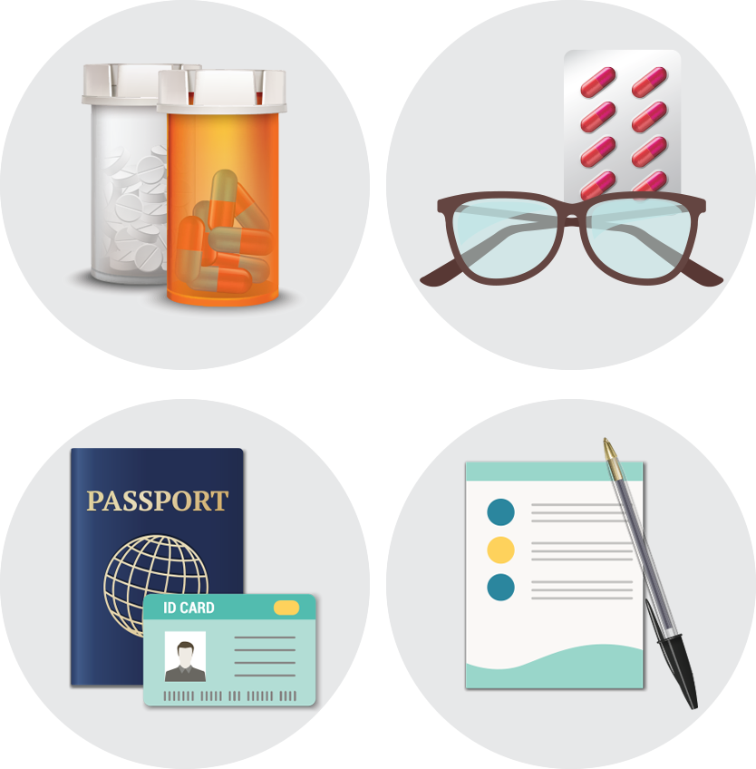

대규모 재앙에 대비해 집에 지하 대피소를 짓고 식료품 저장고를 갖추지는 않더라도, 재난 비상 상황에서 구조될 때까지 생존에 필수적인 응급 물자를 구비해 둘 필요가 있습니다.
재난상황의 진정 및 구조대의 수색에 소요되는 72시간을 가정하고 수도, 가스, 전기가 끊긴 상태에서 3일간 버틸 수 있는 식수와 식료품을 한 곳에 모아 두고, 생존 필수품을 담은 가방을 마련해 둡니다.
서바이벌 키트는 집을 떠나 대피할 경우 크고 무거우면 곤란하므로 가족 수대로 1인당 반드시 휴대할 물자의 우선 순위를 정하고, 체크리스트를 만들어 계절별로 물자를 점검합니다.

약 / 안경
구급약 외에도 당뇨, 고혈압, 암 및 그 외 질병으로 상시 처방약을 복용하는 사람은 최소 3일분의 여분을 소지해야 합니다.
천식 및 알레르기가 있는 경우에도 평소 복용하는 약물을 구비하도록 합니다. 콘텍트렌즈를 착용하는 사람은 안경을 서바이벌 키트에 미리 넣어 두십시오.
신분증 / 연락처 / 의료정보
비상시에는 갑자기 집 주소, 가족의 전화번호가 생각나지 않을 수도 있습니다. 중요한 연락처를 따로 적어 소지합니다.
질병이 있는 경우, 주치의의 이름과 연락처가 있는 처방전 사본에 병명과 혈액형을 함께 적어두어 응급시 구조대와 의료진이 참고할 수 있게 합니다.